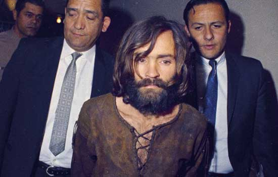

Media Portrayal
Just as everything else in American culture, the media has a view and a way of depicting everything. Though many outlets are reputable and omit facts, such as news outlets, others skew the truth and portray propaganda to distort the public opinion. Cults, and organzied groups in general for that matter, are one of these many topics. Especially in the sense of entertainment, cults and organized political and religious groups are portrayed in a usually-sickening manner. The lesson to be learned here is to know when to accept something as fact or fiction, and where to look for the information that you want or need. The photo below is the arrest of infamous Charles Manson, whos story is depicted in the Intriguing Cases section of this site.
